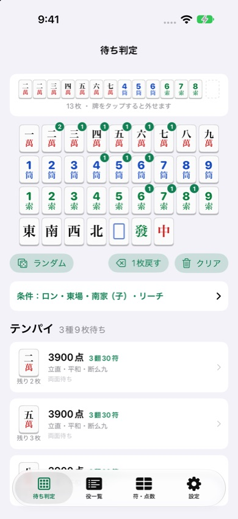
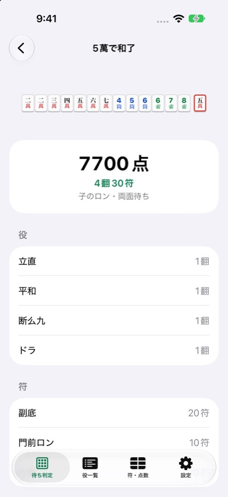

麻雀待ち判定
麻雀の手牌をタップで入力すると、テンパイの待ち牌と残り枚数、待ちごとの役・符・点数がすぐにわかるiPhoneアプリです。多面張の待ちの確認や、役・点数の勉強に使えます。
iPhone（iOS 17以降）・無料（広告あり）


できること
- 待ち判定：13枚の手牌から待ち牌をすべて表示。残り枚数（自分の手牌から見た枚数）と、両面・嵌張・単騎などの待ちの形もわかります。
- 待ちごとの役と点数：ロン／ツモ、場風・自風、リーチ・一発、ドラの枚数を選ぶと、待ちごとに点数を計算。役がない待ちも一目でわかります。
- 和了の内訳：役と翻数、符の内訳（副底・面子・雀頭・待ち）、点数の計算手順を表示します。
- 打牌候補：14枚を入力すると、何を切ればテンパイするか、テンパイしない場合は有効牌が多い打牌を表示します。
- 役一覧：1翻から役満まで、成立条件と牌の例。名前や読みで検索できます。
- 符の数え方・点数早見表：符の表と、子・親の点数早見表。
よくある質問
鳴いた手や槓のある手も判定できますか
現在は鳴き・槓のない門前の手牌が対象です。
切り上げ満貫やダブル役満に対応していますか
「設定」のルールで、切り上げ満貫・ダブル役満・連風牌の雀頭の符（4符／2符）を切り替えられます。
広告を消せますか
「設定」→「広告を削除する」から、買い切り（300円）で広告を非表示にできます。機種変更後は「購入を復元」を押してください。
便利な早見表
麻雀 点数早見表：符と翻から、子・親のロン・ツモの点数を一覧で
お問い合わせ
メール: tanacount.support@gmail.com
返信までお時間をいただく場合があります。
ほかのアプリ
麻雀何切る問題：何切る問題を自動で出題。打牌ごとの受け入れ枚数で解説、今日の5問つき
麻雀点数計算ドリル：翻と符から点数を4択で答える練習問題アプリ
麻雀成績表：セット麻雀の精算・通算成績・局ごとのグラフ、iCloudで同卓者と共有
麻雀点数計算：符と翻から点数を自動計算する、卓に置いて使う麻雀の点数表示アプリ
棚卸カウンター：JANバーコードを読み取って、小さなお店の在庫を数えるiPhoneアプリ